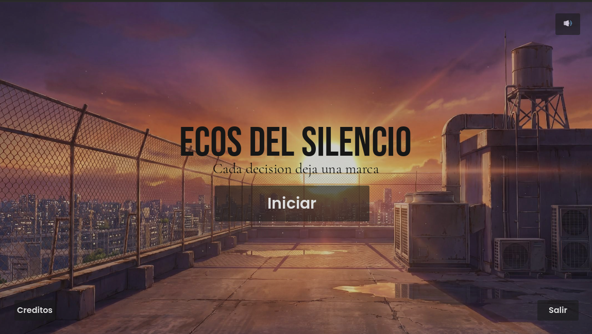
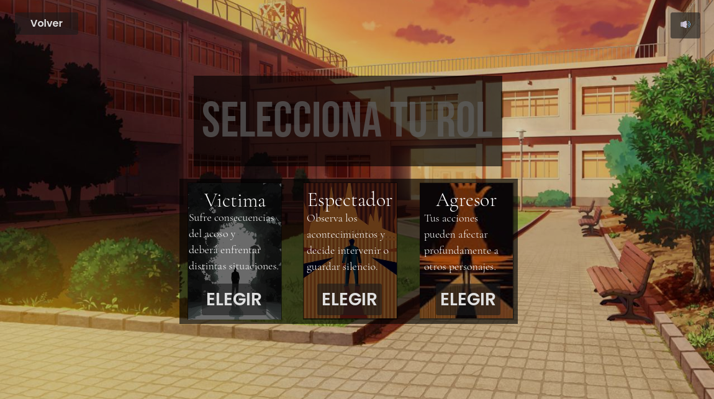
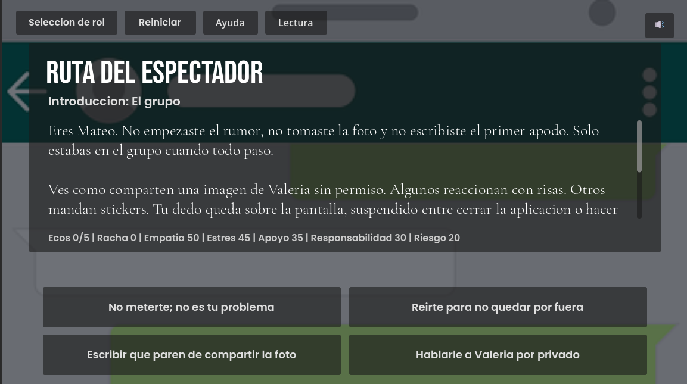

ECOS DEL SILENCIO is an educational video game developed by the ECHOMIND team. The project aims to raise awareness about bullying and cyberbullying through interactive storytelling and decision-making.
Experience bullying situations from the victim's perspective.
Choose whether to intervene or remain silent.
Understand the consequences of harmful actions.



| User | Ease of Use | Message | Interface |
|---|---|---|---|
| User 1 | 5 | 4 | 4 |
| User 2 | 4 | 5 | 4 |
| User 3 | 5 | 5 | 4 |
| User 4 | 2 | 4 | 3 |
| User 5 | 3 | 4 | 5 |
The game promotes empathy, awareness and critical thinking about bullying and cyberbullying through interactive storytelling and player-driven decisions.